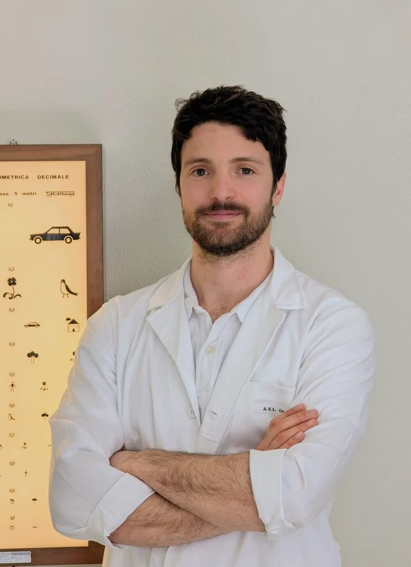
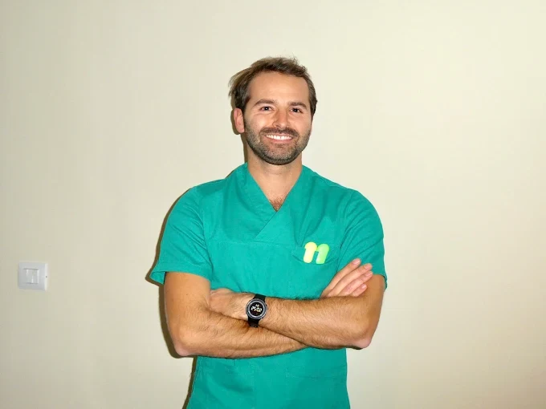
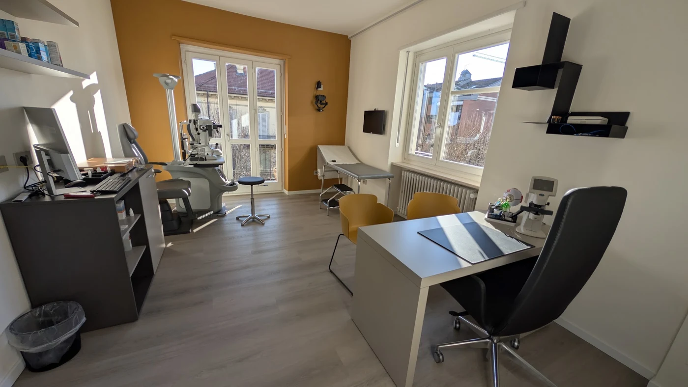

Marco Giuseppe Leto
Direttore della Struttura Complessa di Oculistica di Savigliano, ASL CN1.
Profilo professionaleInterventi di estrazione di cataratta con lenti premium, chirurgia refrattiva e percorsi di diagnosi e cura per le maculopatie.

Diverse tipologie di lenti intraoculari per le diverse necessità del paziente, con la possibilità di vedere bene da vicino.
Leggi la guida
Correzione di miopia, ipermetropia e astigmatismo con tecniche laser o con l’impianto di lenti intraoculari (ICL).
Leggi la guida
I segnali da riconoscere, l’esame della retina e il ruolo dell’OCT.
Leggi la guida
Seguire una ricetta, leggere un menù, riconoscere un volto. A ogni gesto corrisponde una distanza diversa. Scopri come funzionano le IOL multifocali e quali compromessi valutare prima di sceglierle.
Scopri le multifocaliDirettore della Struttura Complessa di Oculistica di Savigliano, ASL CN1.
Profilo professionale
Medico oculista presso la Struttura Complessa di Oculistica ASLCN1.
Profilo professionale
Medico oculista presso la Struttura Complessa di Oculistica di Savigliano, ASL CN1.
Profilo professionale
Studio Oculistico Savigliano
Piazza Sperino 2, di fronte alla stazione.
Prenotazioni telefoniche dal lunedì al venerdì, dalle 14.00 alle 16.30.
Studio Santa Lucia
Corso Vittorio Emanuele II 2.
Prenotazioni telefoniche dal lunedì al giovedì, dalle 14.00 alle 16.30.
Orari per le prenotazioni telefoniche
Savigliano · Dal lunedì al venerdì, 14.00–16.30
Cuneo · Dal lunedì al giovedì, 14.00–16.30